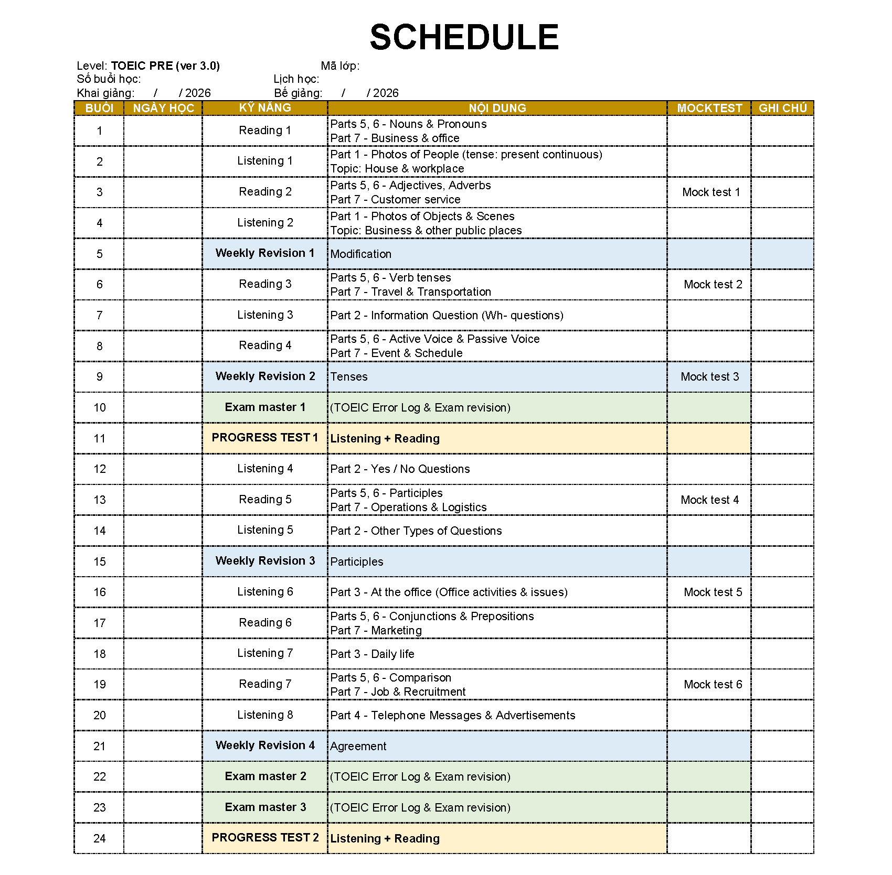
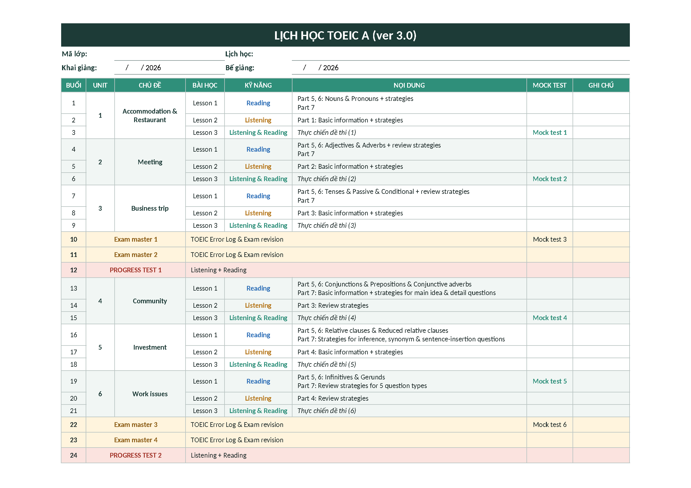

Tóm tắt kiến thức TOEIC Pre · TOEIC A
Nhập mã lớp thầy gửi để xem các bài lớp mình đã học.
Tóm tắt từng bài Reading, Listening và Weekly Revision (giáo trình mới) bằng tiếng Việt, kèm bảng từ vựng và flashcard. Nhập mã lớp để xem các bài lớp bạn đã học; bài mới sẽ tự mở vào ngày lớp học tới bài đó.
Bài tự mở theo lịch học của từng lớp (sửa danh sách lớp, ngày khai giảng, ngày nghỉ trong file docs/classes.js). Trên máy này thầy xem được mọi bài.


Các bài xếp đúng thứ tự 24 buổi học trên lớp. Bài tóm tắt tự mở sau giờ tan học của buổi học bài đó; các buổi luyện đề, kiểm tra ghi ngày học để bạn theo dõi.
Weekly Revision 1 Ôn tập Listening Unit 1–2, Reading Unit 1–2
Xem bàiÔn tập Listening Unit 1–2, Reading Unit 1–2Chưa mởListening 3 Part 2 – Information Questions
Xem bàiCâu hỏi Who / What / When / Where / Why / HowChưa mởExam master 1
Luyện đề trên lớp
Progress Test 1 Kiểm tra giữa khoá · ôn lại sau bài thi
Xem bàiKiến thức hay sai & từ vựng khóChưa mởExam master 3
Luyện đề trên lớp
Progress Test 2
Kiểm tra cuối khoá
Mỗi Unit học 3 buổi: Lesson 1 Reading, Lesson 2 Listening, Lesson 3 luyện tập trên lớp. Bài tóm tắt tự mở sau giờ tan học của buổi học bài đó.
Ôn lại kiến thức khoá TOEIC Pre
Xem bàiLuôn mở · Tóm tắt ngữ pháp Reading và mẹo Listening Part 1–4 đã học ở Pre, kèm câu luyệnUnit 1 · Lesson 3
Luyện tập trên lớp
Unit 2 · Lesson 3
Luyện tập trên lớp
Unit 3 · Lesson 3
Luyện tập trên lớp
Exam master 1
Luyện đề trên lớp
Exam master 2
Luyện đề trên lớp
Progress Test 1
Kiểm tra giữa khoá
Unit 4 · Lesson 3
Luyện tập trên lớp
Unit 5 · Lesson 3
Luyện tập trên lớp
Unit 6 · Lesson 3
Luyện tập trên lớp
Exam master 3
Luyện đề trên lớp
Exam master 4
Luyện đề trên lớp
Progress Test 2
Kiểm tra cuối khoá
Các chuyên đề gom kiến thức theo chủ điểm cho các bạn dễ ôn bài. Luôn mở, trong mỗi bài có ghi bài học tương ứng trong chương trình.
Phân biệt loại từ: Tính – Danh – Động – Trạng
Xem bàiLuôn mở · Adjective, Noun, Verb, Adverb + 12 câu luyện Part 5Các thì của động từ trong TOEIC
Xem bàiLuôn mở · Hiện tại, quá khứ, hoàn thành, tương lai + dấu hiệu nhận biết · 12 câu Part 5Giới từ thường gặp trong TOEIC
Xem bàiLuôn mở · at/on/in, by/until, for/during/since, despite vs although, cụm cố định · 12 câu Part 5Đại từ quan hệ trong TOEIC
Xem bàiLuôn mở · who, whom, whose, which, that, where, when, what · 12 câu Part 5To V và V-ing trong TOEIC
Xem bàiLuôn mở · decide to V, avoid V-ing, look forward to V-ing, in order to · 12 câu Part 5Sự hòa hợp chủ ngữ – động từ
Xem bàiLuôn mở · Tìm đúng chủ ngữ, each/every, a number of, neither…nor · 12 câu Part 5Câu trả lời gián tiếp ở Part 2
Xem bàiLuôn mở · I'm not sure, It depends, hỏi lại bằng câu hỏi, bẫy lặp từ · 12 câu luyệnNhận ra cách nói lại ở Part 3–4
Xem bàiLuôn mở · Từ đồng nghĩa, nói chung ↔ nói cụ thể, đổi giờ và số · 12 câu luyện